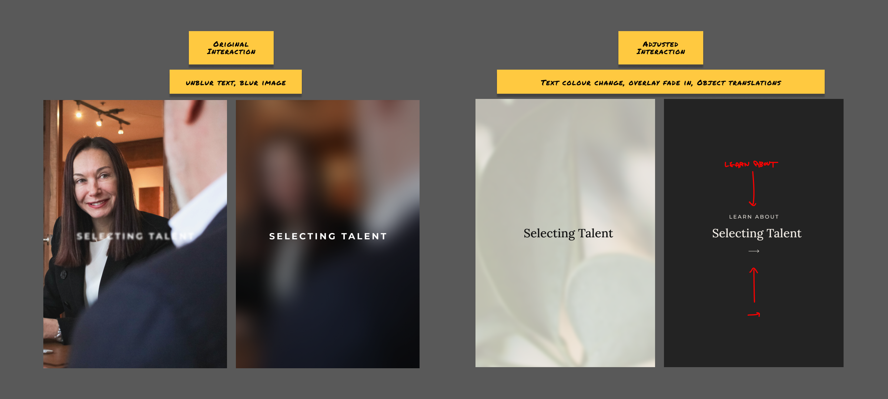

Escaping obsolescence, pursuing clarity and elegance
A website and branding redesign for Stefan, Fraser & Associates
Problem
Stefan, Fraser & Associates (SFA) is a firm of corporate psychologists specializing in assessing candidates and employees to support their clients’ hiring and coaching needs. From 2020 to 2022, SFA experienced a revenue drop of 33% and was struggling to attract new clients. As competitors updated their websites, SFA felt a website overhaul was the strategic move to broaden their avenues for attracting clients. We ran them through a Discovery Workshop and an iterative process delivering a cohesive website, design system, and branding guidelines.
Role
I was tasked with redesigning the SFA website during my 4-month work term as the only UX designer on a cross-functional team of three. My goal was to create a better website experience for potential clients visiting the site.
In my day-to-day, I would run a team stand-up with the team where we decide on tasks for the day or week and give updates on in-progress tasks.
Identifying Needs

To start, I assessed the old website and identified specific points that needed to be addressed. These points included:
- Weak stock images
- Inconsistent text hierarchies
- Unclear button indications
- Hidden people and faces within carousels
- Dated portraits
- Long line lengths
- Text contrasts that don’t meet WCAG AA or AAA guidelines
- and an inconvenient site structure
Pursuing Understanding
I ran a condensed Discovery Workshop with SFA’s team to learn more about the problem and explore potential directions to work towards. We brought in the firm’s psychologists and admin staff to cover goals, audience, user needs, solution requirements, success metrics, and site structure.
From this workshop, we were able to consolidate a final vision: Sticky, sexy, and usable. Our focus was to improve the interactions and structure of the website to minimize reader resistance, create an appealing and unified styling, and improve the web accessibility and flow of the site.
Defining the Visual Style
With a better understanding of the project's direction, we explored various design styles. Six mock-up styles were presented for feedback, leading to a preference for a sophisticated and premium aesthetic. We settled on a monotone palette, opting for bold serif fonts and authentic human imagery over graphical representations.
Parallel Processes
With the visual style defined, we began compiling a design system and establishing a unified brand identity. In order to regularly update shareholders with tangible results, we worked on the prototype, design system, and branding in parallel. We presented a few versions of each page to our stakeholders to gather feedback before finalizing the page layouts.
Addressing Gaps
When building the prototype, I identified critical gaps in our design system, including image styles, the absence of an icon set, issues with button hover states, and the lack of branding guidelines.
For consistent image styling and considering budget limitations, I shot all the staff portraits on the site. I leveraged the boardroom’s larger windows for soft natural lighting and a section of neutral-coloured wall. All portraits align having cool-neutral backgrounds, accentuating warm smiles and skin tones.
I created a custom set of minimalist icons for the website to complement its visual style. In anticipation of future needs that may demand more complex icons, I introduced an icon set from HeroIcons. This icon set is available under an MIT license, making it free for commercial use, and matches well with our custom icons.
Our original hover animations with blurs proved too intense for WordPress, causing lag. I simplified interaction animations for smoother performance. SFA relied on a custom PHP-based plugin for their testing needs and we wanted to enable the admin staff to make future site edits independently after the project timeline, so we worked around the platform’s limitations.
Working together with the company President, we wrote a mission statement and core values as a part of a brand identity. While these also went onto the site, I included them as part of a branding guide for staff to refer to. In this document, I detail rules for logo usage, colours, typography, and image styling.
Reflection
This project was a unique opportunity for me, as I lacked the guidance of a design mentor. Relying on practiced skills from previous work experiences, we delivered a fully functional website with a WordPress backend, a unified design system, and a compiled branding guide.
The most valuable lesson I learned was the importance of communication. I had to be confident in my design skills, educate my superiors about best practices, and provide clear rationale for my decisions. Working in a small company allowed my voice to be heard, but as the sole designer, I also had to assertively defend my design choices. This experience not only enhanced my design skills but also highlighted the significance of effective communication and advocacy within a team.